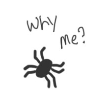
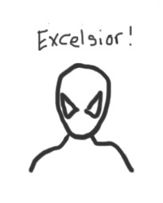
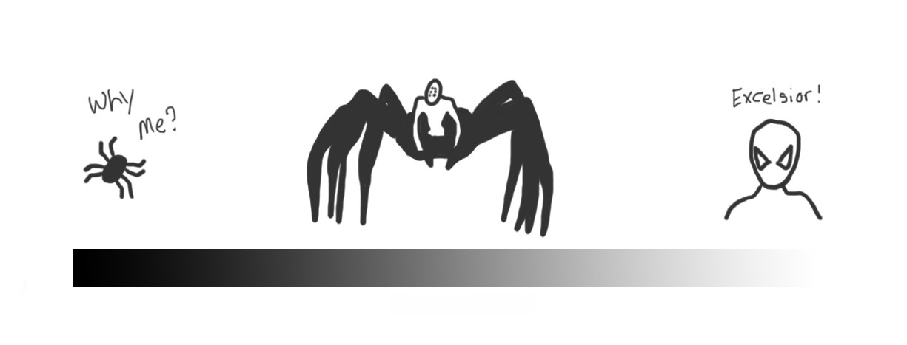
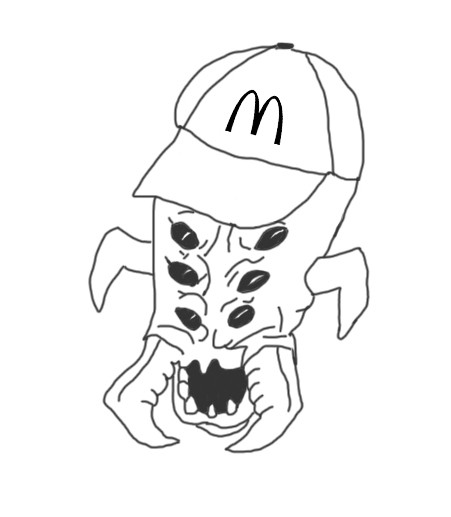
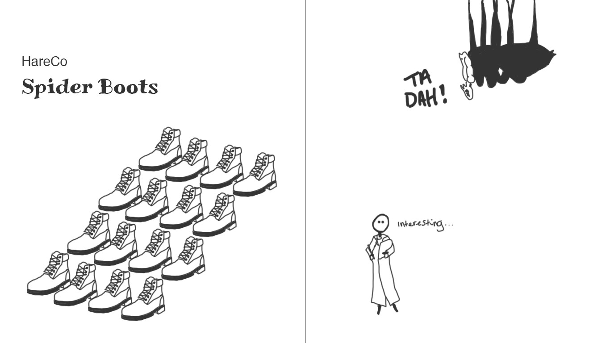
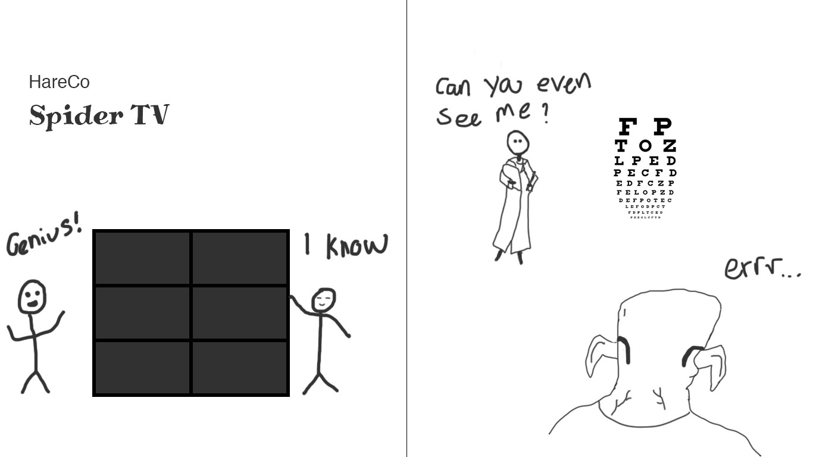

Designing products for mutant spider people.
The incident at the experimental laboratory is still under investigation. It’s cause still unknown. Reports of strange lights in the sky have been explained away as a mass hysteria event, most likely caused by the radioactive leak. What we do know, is that this was the event that started it all. Specimens escaped. The radioactive material went airborne. It is in this contamination zone around the blast site where humans and spiders began to rapidly mutate. Their DNA had been spliced together.
Original image sourced from sketchite.com
Currently, we categorise the victims into three different groups. The spiders in the low exposure zone acquired 1% human DNA.
They still look like average house spiders, but they have become self aware. This group of mutants will return to their regular web building and insect catching duties, suffering only from an occasional identity crisis.
One man was in the low exposure zone. He acquired 1% spider DNA. It resulted, of course, in our friendly neighbourhood Spiderman™.
He thoroughly enjoys his new sensory and athletic abilities. He will choose to serve the community through web-swinging and guerrilla law enforcement.
Then we have the unfortunate souls in the high exposure zone. They were infused with equal measures of both spider and human DNA.
Ratio of spider to human DNA.
Fortunately, this new species of mutants chose to integrate with human society, rather than destroy us. They are thirsty for knowledge and keen to enter the workforce. We thankfully share much of the same ideologies.
The first generation of spider-people gain wilful employment in construction, service & hospitality industries whilst the second generation seek out higher education. The spider-people enjoy the same modern conveniences, creature comforts, and occasional self-indulgence as we humans. Companies look to capitalise on the untapped market potential of the spider-people. Designers are itching to get started.
The global corporation ‘HareCo’ is desperate to be the first to market. They will attempt to appeal to the relatable, well-understood human side of the spider-people. Their first move is to order-up huge quantities of their signature steel toe boots to outfit the mutant construction workers. They will be marketed and sold in sets of 8.
Tortoise-Inc are taking a different approach. They invest time and effort into user research. They start by observing and learning how the spider-people move and walk. As it turns out, footwear for mutants would not only be unnecessary and impractical, it would be catastrophic.
In a bid to recoup some of their loses, HareCo turns their attention to their high-end, home entertainment products. Working with the knowledge that the spider-people have six eyes, they start producing TVs with six panels.
Meanwhile, Tortoise-Inc are turning up some interesting results in their research of the mutants’ colour and depth perception. Six panels is probably the way to go, but they will need to offer a solution to the spider-peoples’s poor eye-sight first. Maybe they can offer a wearable device.
To take the next big step in their inclusive designs, Tortoise-Inc head out into the community. They organise talks and workshops to encourage the spider-people to consider a career in design and development. They promptly hire some interns and promising juniors. With a open minded and diverse team at the helm, Tortoise-Inc thrives and increases their market share exponentially.
A HareCo employee releases public manifestos about spider-people being biologically unsuitable for this kind of work.
Here’s the rub. There’s (currently) no such thing as spider-people. That fact is an easy one to accept. A more difficult fact to accept is that there is no such thing as normal either. We are all essentially spider-people. Confusing, confused and infinitely complicated.
Those of us in terrific health, with perfect eyesight and hearing, who can read and write well, who can multi-task efficiently, and who are 100% focused on the task at hand at all times, are in the minority. The rest of us wear glasses and we’re in a noisy environment. We have disabilities. We have broken wrists and ear infections. We’re pushing a shopping trolley with a hangover and a slow internet connection. We are colour-blind. We’re outside in bright sunshine or in the pouring rain. We are part of an ever-expanding spectrum of humanity. Some will say it makes no difference, but it’s those differences that make it.
The next time you think of a new feature, sketch out a wireframe or compile a new component, I hope you will consider the spider-people. Place accessibility as the supporting pillar of your creation, rather than the outhouse. Research, test, and test some more. Nurture strong roots of diversity and inclusivity in yourself and your work. Approach it all with the same degree care and inclusive consideration you would give to our mutant friends; the spider-people.
In association with Common Ground